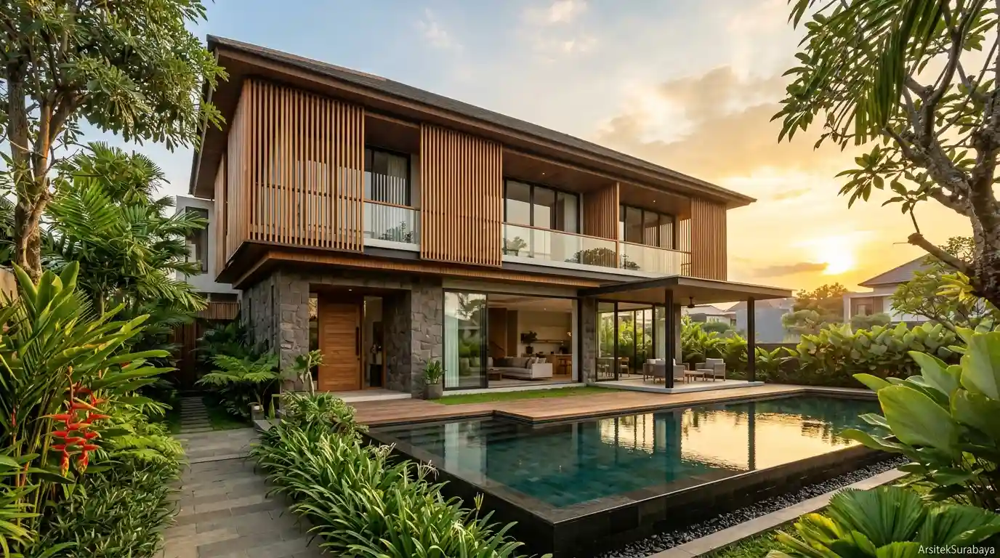

Spesifikasi Profesional
1. Desain Arsitektur Rumah
Perancangan tata ruang fungsional, fasad 3D photorealistic yang memukau, serta dokumen gambar kerja teknis (DED) lengkap untuk hunian pribadi beriklim tropis.

Apa Saja yang Didapatkan dalam Layanan Ini?
Dalam layanan ini, kami memastikan setiap detail dirancang secara presisi berdasarkan kebutuhan spesifik Anda:
Tahapan Pengerjaan Proyek
- Konsultasi awal mengenai ukuran lahan, lokasi, serta daftar kebutuhan ruang.
- Penyusunan konsep awal dan denah tata ruang 2D hingga disetujui.
- Pengembangan visualisasi 3D realistis dan pemilihan material.
- Penyusunan lembar dokumen gambar kerja teknis (DED) & RAB siap konstruksi.
Siap Memulai Proyek Anda?
Diskusikan kebutuhan dan anggaran Anda bersama arsitek profesional kami.
Konsultasi via WhatsApp